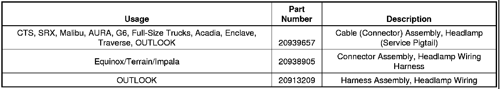
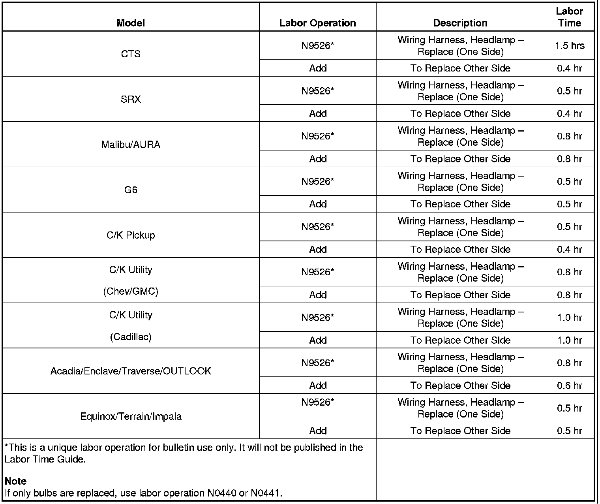
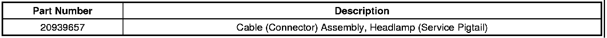
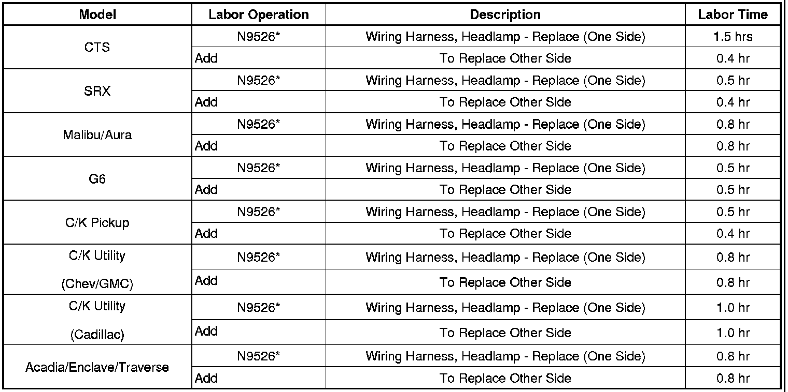

Lighting - Low Beam Headlamp(s) Inoperative
TECHNICALBulletin No.: 10-08-42-001C
Date: January 26, 2012
Subject: Low Beam Headlamp Bulb Diagnosis/Replacement (Inspect Bulb and Connector)
Models:
2008-2011 Buick Enclave
2007-2011 Cadillac Escalade, Escalade ESV, Escalade EXT
2008-2011 Cadillac CTS, CTS-V
2010-2011 Cadillac CTS Sport Wagon, SRX
2006-2011 Chevrolet Impala
2007-2011 Chevrolet Avalanche, Silverado, Suburban, Tahoe
2008-2011 Chevrolet Malibu
2009-2011 Chevrolet Traverse
2010-2011 Chevrolet Equinox
2007-2011 GMC Acadia, Sierra, Yukon, Yukon XL, Yukon Denali, Yukon Denali XL
2010-2011 GMC Terrain
2006-2010 Pontiac G6
2007-2010 Saturn AURA, OUTLOOK
Attention:
This bulletin DOES NOT apply to vehicles equipped with High Intensity Discharge (HID) lamps.
Supercede:
This bulletin is being revised to update the models to include the Chevrolet Impala. Please discard Corporate Bulletin Number 10-08-42-001B (Section 08 - Body and Accessories).
Condition
Some customers may comment that the low beam headlamp is inoperative.
Correction
DO NOT replace the entire headlamp assembly for this condition.
Replace the bulb and inspect the connector following the procedure below.
1. Remove the headlamp bulb. Refer to Headlamp Bulb Replacement procedure in SI.
2. Inspect the connector.
- If the connector is NOT discolored or damaged, replace the bulb only. For bulb part numbers, see Headlamp Bulb (Low Beam) in Group 02.727 of the appropriate Parts Catalog.
- If the connector is discolored at the bulb interface, replace the connector (service pigtail listed below) and bulb.
Important
Use only Duraseal splice sleeves (salmon, P/N 19168446). Other splice sleeves may not protect the splice from moisture or provide a good electrical connection. Refer to Splicing Copper Wire Using Splice Sleeves in SI for splicing procedures.
1. Cut the wires of the connector approximately 45 mm (1-3/4 in) from the connector and splice in the service pigtail connector. Ensure that the splices are not above the connector when re-installing.
2. Replace the bulb.
3. Verify that the headlamp is fully functional.
Parts Information

Warranty Information

For vehicles repaired under warranty, use the table.

Disclaimer
TECHNICAL
Bulletin No.: 10-08-42-001
Date: May 14, 2010
Subject: Low Beam Headlamp Bulb Diagnosis/Replacement (Inspect Bulb and Connector)
Models:
2008-2010 Buick Enclave
2008-2010 Cadillac CTS, CTS-V
2010 Cadillac CTS Sport Wagon, SRX
2007-2010 Cadillac Escalade, Escalade ESV, Escalade EXT
2007-2010 Chevrolet Avalanche, Silverado, Suburban, Tahoe
2008-2010 Chevrolet Malibu
2009-2010 Chevrolet Traverse
2007-2010 GMC Acadia, Sierra, Yukon, Yukon XL, Yukon Denali, Yukon Denali XL
2006-2010 Pontiac G6
2007-2010 Saturn AURA
Attention:
This bulletin DOES NOT apply to vehicles equipped with High Intensity Discharge (HID) lamps.
Condition
Some customers may comment that the low beam headlamp is inoperative.
Correction
DO NOT replace the entire headlamp assembly for this condition.
Replace the bulb and inspect the connector following the procedure below.
1. Remove the lamp assembly, then remove the bulb. Refer to Headlamp Assembly Replacement in SI.
2. Inspect the connector.
- If the connector is NOT discolored or damaged, replace the bulb only. For bulb part numbers, see Headlamp Bulb (Low Beam) in Group 02.727 of the appropriate Parts Catalog.
- If the connector is discolored at the bulb interface, replace the connector (service pigtail listed below) and bulb.
Important
Use only Duraseal splice sleeves (salmon, P/N 12089189). Other splice sleeves may not protect the splice from moisture or provide a good electrical connection. Refer to Splicing Copper Wire Using Splice Sleeves in SI for splicing procedures.
1. Cut the wires of the connector approximately 45 mm (1-3/4 in) from the connector and splice in the service pigtail connector. Ensure that the splices are not above the connector when re-installing.
2. Replace the bulb.
3. Verify that the headlamp is fully functional.
Parts Information

Warranty Information
For vehicles repaired under warranty, use:

If only bulbs are replaced, use labor operation N0440 or N0441.
Disclaimer